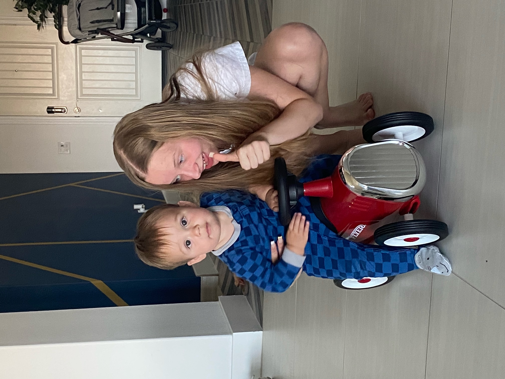

Jake and Freya got up to watch the Grand Prix qualifying, which turned out to be great move. Alison wasn’t bothered and I chose sleep. After some breakfast and being entertained for free by Elliot and general catching up, it was decided that a trip to Target was needed. Richard was left home on duty to get Elliot to have his nap.
Angie navigated me there and back beautifully, explaining that STOP means stop in the US and clarifying who has right of way. Accidents averted. Target had lots of good stuff. Freya bought clothes, Jake bought Lego, Alison bought useful things and I bought beer.
It was a bit too hazy to see the Mexican border wall, but we now know where to look. My phone welcomed me to Mexico and the BBC Weather app has our closest location as Tijuana Airport, we are so close. The weather was warm by UK standards, so we walked to the local outdoor pool. It was cold by US standards, so it was quiet. Elliot entertained us for free some more by splashing, dunking under the water and bouncing around. We stayed just long enough to get a bit chilly, then came back to the house for food-related free entertainment.
Angie has taken our general requests, her and Richard’s availability, geographic location of venues, animal circadian rhythms and US military discounts to formulate a detailed plan of events and food over the next 96 hours in San Diego. Muy bien.
Rich and Angie are out tonight for a drinks party, so we get to put Elliot to bed, after a bit of play time. Freya had the honour tonight of giving him his bottle, reading a story and putting him to bed. He grumbled a little but was asleep within half an hour of starting his bedtime routine. He is entertaining and well-behaved.

We had a Cheesecake Factory delivery for tea, which was mainly excellent. Mains were better than expected (cheeseburger spring rolls are a work of genius). Half of each person’s dessert is in the fridge, ready for part 2 tomorrow (breakfast while watching the Grand Prix).